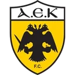

Будё-Глимт — ЛАСК прогноз на матч 24 ноября
Расчёт модели
- 2,6 : 0,8ожидаемые голы
- 59 %тотал больше 3,5
- 75 %обе забьют
Кэфы на матч
- П11,54
- Х5,21
- П25,17
Тотал 3,5: больше 1,71, меньше 2,20
Это справка, не рекомендация.
Цифры считает модель по данным сайта, а не эксперт. Это вероятности, а не гарантия исхода. Как считает модель · словарь терминов.
- ТурнирЛига чемпионов
Коротко о матче
По форме команды близки: в пяти последних матчах Будё-Глимт — 1 победа, ЛАСК — 2 победы. Слабое место — оборона: Будё-Глимт — в среднем 2,2 пропущенного мяча за игру в этих пяти матчах, так что у соперника будут моменты.
По расчёту модели фаворит — Будё-Глимт: 59 % на победу. Это оценка по данным, а не обещание исхода.
Стартовые составы
- 12Хайкин
- 20Шёвольд
- 4Бьёртуфт
- 5Алеесами
- 15Бьёркан
- 8Эукленн
- 7Берг
- 19Фет
- 11Бломберг
- 9Хельмерсен
- 10Хёуге
Ожидаемый состав по данным FotMob — с учётом травм и дисквалификаций. Официальный появится примерно за час до начала.
- 1Jungwirth
- 4Мбуямба
- 43Alemão
- 16Андраде
- 20Йёргенсен
- 10Любичич
- 6Богарде
- 30Хорват
- 25Дибанго
- 8Усор
- 7Адениран
Ожидаемый состав по данным FotMob — с учётом травм и дисквалификаций. Официальный появится примерно за час до начала.
Не сыграют
Будё-Глимт
- Эвжентравма, вернётся в начале декабря
- Миккельсентравма, вернётся в начале декабря
 ЛАСК
ЛАСК
- Беллотравма
- Harakatéтравма, вернётся в середине ноября
Травмы и дисквалификации на этот матч, по данным FotMob. Обновляется несколько раз в день.
Отдых и расписание
У обеих команд по 20 дней отдыха.
Будё-Глимтхозяева
- 20дней отдыха
- 1матч за 7 днейвключая этот
- 2-йдомашний матч подряд
- 15дней до следующегоЛига чемпионов: Ланс
Прошлый матч: 03.11, Будё-Глимт — Лилль 0:0
ЛАСКгости
- 20дней отдыха
- 1матч за 7 днейвключая этот
- 1-йвыездной матч подряд
- 15дней до следующегоЛига чемпионов: Фенербахче
Прошлый матч: 03.11, ЛАСК — Слован 4:0
Отдых считаем от начала прошлого матча. Еврокубок через 3–4 дня после матча — частая причина ротации.
Форма: последние матчи
Будё-Глимт 1 победа из 4
 П0:5
П0:5 В1:0
В1:0 П3:4
П3:4 Н0:0
Н0:0
ЛАСК 2 победы из 4

П0:1 П3:6
П3:6- В3:2
 В4:0
В4:0
Кто в форме
Больше всего голов и передач в последних матчах команды (все турниры).
Будё-Глимтза 4 последних матча
| Игрок | Г | П | Г+П |
|---|---|---|---|
| Сондре Фет | 1 | 2 | 3 |
| Андреас Хельмерсен | 1 | 0 | 1 |
| Енс Петер Хёуге | 1 | 0 | 1 |
| Фредрик Шёвольд | 1 | 0 | 1 |
| Сондре Эукленн | 0 | 1 | 1 |
ЛАСКза 4 последних матча
| Игрок | Г | П | Г+П |
|---|---|---|---|
| Каспер Йёргенсен | 2 | 1 | 3 |
| Роберт Любичич | 2 | 1 | 3 |
| Джуниор Иван Нябейе Дибанго | 0 | 3 | 3 |
| Florian Flecker | 2 | 0 | 2 |
| Самуэль Адениран | 1 | 1 | 2 |
Положение в таблице
| Команда | Место | И | В | Н | П | Голы | Очки |
|---|---|---|---|---|---|---|---|
| Будё-Глимт | 25 | 4 | 1 | 1 | 2 | 4:9 | 4 |
| 16 | 4 | 2 | 0 | 2 | 10:9 | 6 |
Куда дальше
Материалы носят информационный характер и не гарантируют результат. Реклама букмекеров на сайте не размещается. Сайт только для совершеннолетних (18+).